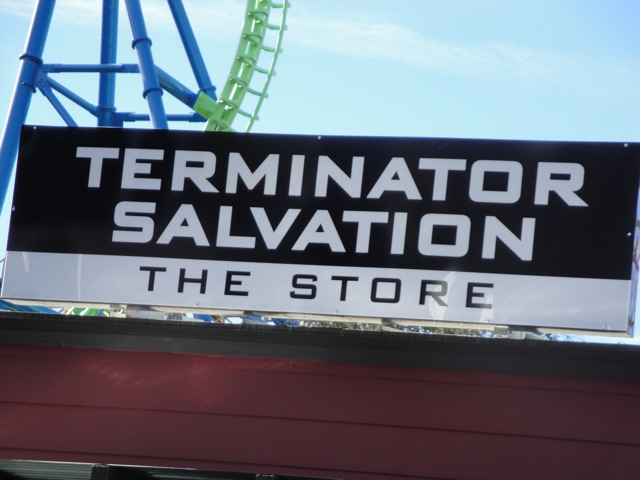
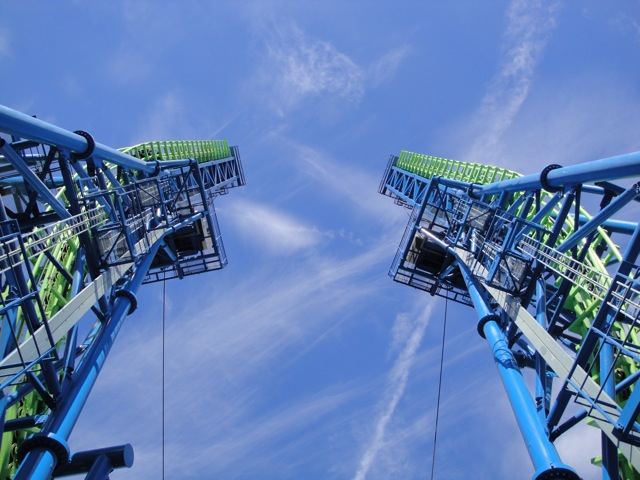
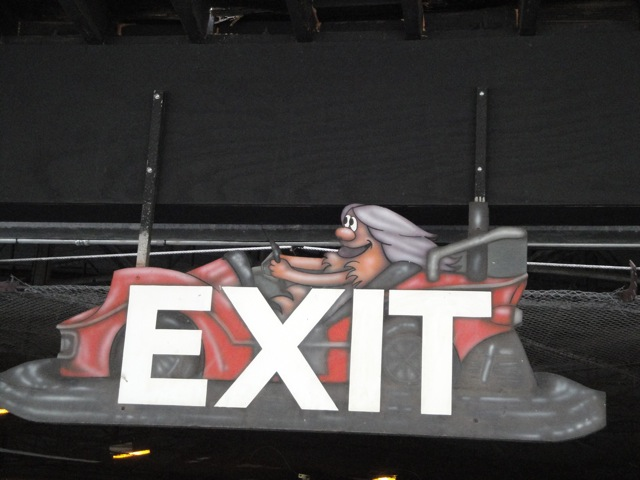
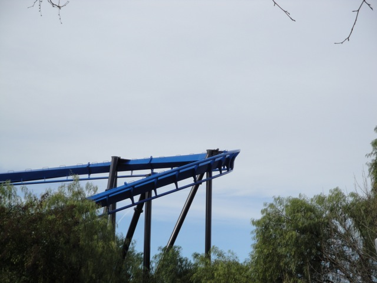
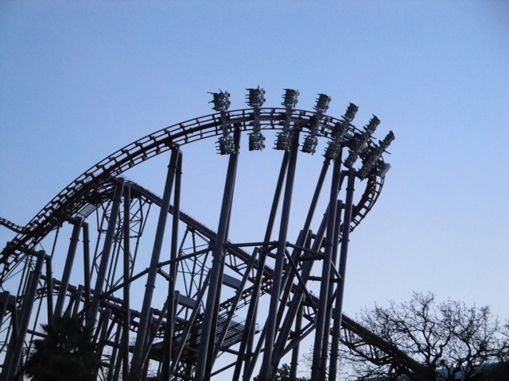
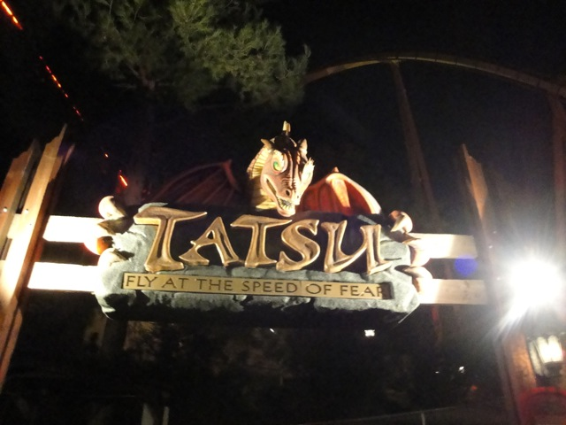
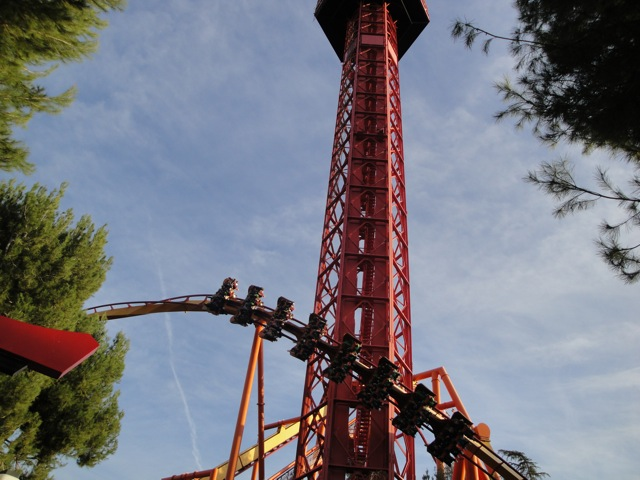
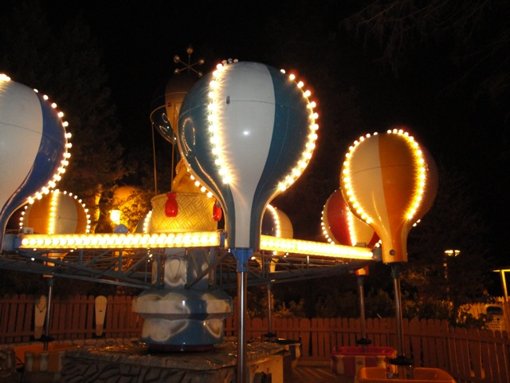
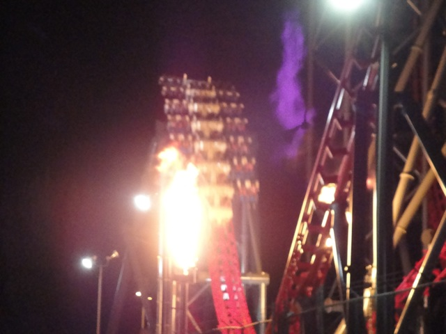

SFMM's Rock'N'Ride New Years Eve Party 2009
Ok, so today, we were at SFMM's Rock'N'Ride New Years Eve Party to celebrate New Years Eve and go into 2010 in style.
 Ok. So here's the story about how Incrediblecoasters got this to be our New Years Tradition. It all started New Years Eve in 2008. Cody and I were playing WarioWare because we were bored. Eventually, we got tired of WarioWare when Cody said "I'm bored. I wanna go to Magic Mtn." I then said "Yeah, I do too." Cody then said something along the lines of "You know they've got a Brand New New Years Event they're starting out this year." Then we ended up going to SFMM and attending the event. I never made an update on it because I didn't bring my camera which I never bothered to bring because of the sudden notice and the fact that Incrediblecoasters was down at the time cause of the Big PC Crash. But at the event, we decided to make it a New Years Tradition and to do a big update on it next year.
Ok. So here's the story about how Incrediblecoasters got this to be our New Years Tradition. It all started New Years Eve in 2008. Cody and I were playing WarioWare because we were bored. Eventually, we got tired of WarioWare when Cody said "I'm bored. I wanna go to Magic Mtn." I then said "Yeah, I do too." Cody then said something along the lines of "You know they've got a Brand New New Years Event they're starting out this year." Then we ended up going to SFMM and attending the event. I never made an update on it because I didn't bring my camera which I never bothered to bring because of the sudden notice and the fact that Incrediblecoasters was down at the time cause of the Big PC Crash. But at the event, we decided to make it a New Years Tradition and to do a big update on it next year.
In other news, they painted this building and it totally looks awesome!
We'll get to all the music, dancing, and 2010 celebrating later. For now, it's all about rollercoaster riding.
 Our first coaster of the day was in fact, Ninja.
Our first coaster of the day was in fact, Ninja.
We are totally ready for Ninja. Oh, and this nice ride op took this pic of us. Thanks Dude. You're awesome.
 Ninja wasn't running that great today.
Ninja wasn't running that great today.
"HOLY CRAP!!!! BATMAN IS BLUE!!!!!!!!"
 Hmm. Something's missing here.
Hmm. Something's missing here.
 "HOLY CRAP!!!! SUPERMAN IS GONE!!!!"
"HOLY CRAP!!!! SUPERMAN IS GONE!!!!"
Hmm. I guess without Superman on the tower, people just don't want to ride it anymore.
We ended up marathoning Superman in honor of our long gone friend, Superman.
Here is a construction photo of SFMM's New 2010 coaster!!
Cody is really really happy right now.

Screw Terminator!! I just want to be in it's shop!!
 Anyways, Terminator was running REALLY FREAKING GREAT TODAY!!!!
Anyways, Terminator was running REALLY FREAKING GREAT TODAY!!!!
 There was really alot of airtime on the ride today!!
There was really alot of airtime on the ride today!!
 Up next would indeed be DejaVu.
Up next would indeed be DejaVu.

Those 90 degree lifthills are really awesome.
 "OH SH*T!!!!!"
"OH SH*T!!!!!"
"Sweet!! We don't have to wait in any more lines!!!"
 "Cranberry Nut Fudge? I am SO trying that!!"
"Cranberry Nut Fudge? I am SO trying that!!"
"You know, it's kind of like Chocolate Covered Bacon."
"Hey!! I thought you were dead? What happened to Terminator and why are you back?"
I still see Freefall in that picture.
 All right. Next up was Goldrusher.
All right. Next up was Goldrusher.
Here's an interesting fact. Goldrusher used to be red. (A really ugly shade of red.)

"EVERYBODY HIT THAT TROLL!!!!!"
Breaking News on Incrediblecoasters. This BBQ Place is really freaking awesome and definetly the best place to eat at SFMM.
 Goliath is proudly sponsered by Driving Force. Because everyone should drive somewhere after going through a powerful fake helix of death.
Goliath is proudly sponsered by Driving Force. Because everyone should drive somewhere after going through a powerful fake helix of death.
I see you old X Sign.
Sorry Newhall Saugus Boys Club. But...
We took out our fountains and replaced them with these bushes. (They really should put those fountains back.)
 Hey Batman!!! Why are you blue??
Hey Batman!!! Why are you blue??

I'm Blue! Da Ba Dee Da Ba Da!!!
 Eiffel 65 predicted the future!!! Quick, we must inform Obama about their superhuman powers!!!!
Eiffel 65 predicted the future!!! Quick, we must inform Obama about their superhuman powers!!!!
 Goliath is all shiney now!!!
Goliath is all shiney now!!!
But they're not quite done painting it.
 Hey look! They gave Scream a brand new sign!!!
Hey look! They gave Scream a brand new sign!!!
 Blue Batman from Scream's line.
Blue Batman from Scream's line.
 Now with that new sign comes new screams.
Now with that new sign comes new screams.
 Since we brought Andrew with us, we HAD to ride the Pirate Ship.
Since we brought Andrew with us, we HAD to ride the Pirate Ship.
 Oops. We brought the wrong Andrew.
Oops. We brought the wrong Andrew.
Despite it being New Years Eve and not hot at all, some people were stupid enough to ride Log Jammer. And that means we just HAD to soak them.
 Despite it being New Years Eve and not hot at all, some people were stupid enough to ride Log Jammer. And that means we just HAD to soak them.
Despite it being New Years Eve and not hot at all, some people were stupid enough to ride Log Jammer. And that means we just HAD to soak them.
"Hey!!! I'm not supposed to get wet on the water ride!!!!"
Goliath is even shiney across the park.
X2 may have a line, but I don't care.
Here's a puddle formed from yesterday's rain. (And you can see Hair Gel's reflection in it.)

X2 was completely badass, as usual.
Don't worry Magic Mtn. We'll be right back.
"Grr! I'm Cody and I'm in the middle of the street!! Gimme an SUV!!!"
Ok. That is bullsh*t.
"HOLY CRAP!!! THE CUP WAS RIGHT!!! IT IS IMPOSSIBLE TO FROWN WHILE EATING A FROSTY!!!!!"
Night falls and the party begins.
Time for us to make total asses of ourselves.
Failure Vs Failure. FIGHT!!!!

Time for Tatsu at night!!!!

Ignore the blue sky in the background. It was indeed night time when we rode.
 That was one awesome ride on Terminator we had.
That was one awesome ride on Terminator we had.
 Afterwards, we went to go ride Riddlers Revenge. (All our Riddlers Photos were taken in the evening.)
Afterwards, we went to go ride Riddlers Revenge. (All our Riddlers Photos were taken in the evening.)
 Riddlers was running much better than it was last New Years Eve.
Riddlers was running much better than it was last New Years Eve.
You smell.
Solve the math problem. How many people can ride Orient Express if 78+1 people can ride?
We then realized that there were STILL stupid people riding Log Jammer, including Pink Sweater Girl. Pink Sweater Girl said alot of stuff to us including "I'M FREEZING!!!!!", "I HATE YOU GUYS!!!!!!", and "F*CK YOU GUYS!!!!!!!" We love you too Pink Sweater Girl. Thanks for the free laughs you gave us.
 Hey Pink Sweater Girl!!! Come ride Canyon Blaster with us!!!
Hey Pink Sweater Girl!!! Come ride Canyon Blaster with us!!!

We decided to give the insane spinning balloons a try since it's been a while since we've ridden them and honestly, I just didn't spin that much. (Though Cody claims they haven't changed a bit, so it's probably just my sh*tty spinning skills.)
 Time for our last coaster of the year.
Time for our last coaster of the year.

On Cold Nights like this, instead of fire, they should spray Liquid Nitrogen in your face instead.
The party is still going on and people are dancing to various songs I listen to on my car radio.
They may have ran out of little coke bottles, but that's not going to stop me from drinking Coke when it turns 2010.
"You got a problem with my new paint job punk?"
It won't be 2009 for long.
Hey Headcheez!! Where were you? Mr. Six was looking foreward to dancing with you again!!!
Oh yeah. It's 2010 now!!!!
Unlike last year, SFMM actually put on a fireworks show!!!
2010 may be great now, but just wait for January 4th when Vacation is over and we're all back to our boring misreble schedules. Then tell me how 2010 is.
Anyways, SFMM put on a FANTASTIC Fireworks Show and had a FANTASTIC EVENT!!! We WILL be back and wish you all a happy 2010!!!
Home